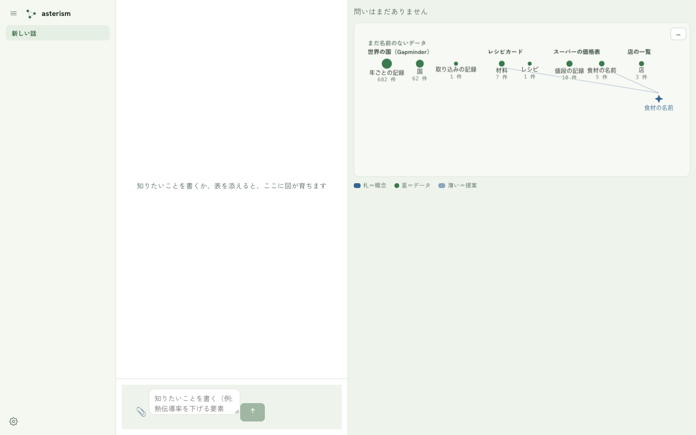

Asterism ユーザーマニュアル
Asterism は、研究データを「つながったデータ」にする道具です。チャットで知りたいことを話すと、AI が答えに要る知識を知識グラフに足し、あなたが確かめて 承認で確定します。表や文書を添えると、データも同じ流れで公開できます。公開したデータには、ふつうの言葉で質問でき、答えには出どころが付きます。公開するまで、データは誰にも見えません。


画面は 3 領域だけです。
| 領域 | 役割 |
|---|---|
| 左: チャットの一覧 | 話（1 つの知りたいこと）を溜めておく。たためる |
| 中央: チャット | 話す・質問する・表を添える（クリップ）・承認で確定する |
| 右: 知識グラフ・問い | 用語（青）とデータの種類（緑）の全体の図と、押した点のデータの表。上のタブで承認した問いの一覧にも切り替わる。薄い＝提案、濃い＝承認済み |
たとえば「どの食材をどの店で買うのが安い？」や「じゃがいもが一番安い店は？」が、そのまま話の始まりになります。狭い画面（375px）では、チャットと知識グラフと問いがタブになります。
はじめに
| 章 | 内容 |
|---|---|
| はじめる | 話を書く → 返事 → 承認、クリップで表を添えて公開する。まずここから |
| 画面別の導線リファレンス | 3 領域と、操作の場所 |
使う
| 章 | 内容 |
|---|---|
| 知識グラフ | 全体の図・文・データ・問い・薄いと濃い・点を押す 1 枚・範囲・値のつながり |
| 質問する | 同じチャットで「…答えて」。出どころつきで答える |
| 話・用語・標準用語 | チャット＝テーマ・用語・9 つの関係・標準用語 ≡ |
| 見る | 点を押してデータを見る・「…を見せて」で表 |
データを育てる
しくみを知る
| 章 | 内容 |
|---|---|
| つながったデータの基礎 | RDF・IRI・クラス・属性・オントロジー・SPARQL の関係 |
| データセットの中のファイル | 変換ルール・仕様・検索タグ・設計書が何をしているか |
そばに置く
困ったときは
- 操作の場所がわからない: 画面別の導線リファレンス
- AI が答えない・書けない: ⚙ の「AI」タブで AI を登録します（設定）